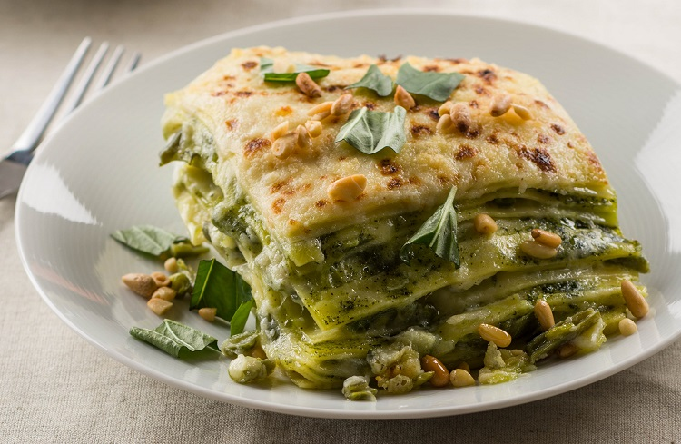

Pesto Lasagne

Lasagne al Pesto - a nutty twist on an Italian classic
It's all about the layers in lasagne (yes, spelled with an "e" — in Italian, lasagna refers to a single sheet of the wide, flat pasta),
the beloved baked dish that hails from Emilia-Romagna. We love this recipe for pesto lasagne, which combines simple fresh
ingredients to create a complex symphony of flavors
Ingredients
For the Pesto Sacue
- 2 cups fresh basil leaves
- 1 clove garlic, peeled
- 1 pinch sea salt
- 1/4 cup freshly-grated Parmigiano-Reggiano
- 3 tablespoons freshly-grated Pecorino Romano
- 5 ounces Ligurian extra virgin olive oil, plust more to to store
For the Lasagne
- 1 recipe egg pasta dough rolled to thinnest setting on pasta machine, or dry lasagne
- 1 recipe besciamella (beschamel sauce)
- 1 cup heritots verts or green beans
- 1 cup graded Pecorino Sardo or Pecorino Romano
- 1/2 cup roasted pine nuts for garnish
Instructions
To mix the Pesto Sauce
- In a large stone mortar, combine the basil, garlic, and salt, and grind with a pestle until paste.
- Add the cheeses, and drizzle in the olive oil, beating it with a wooden spoon.
- Store the pesto in jars, topped with extra virgin olive oil.
To create the Lasagne
- If making your own pasta, divide the dough into 8 portions.
- Roll each one out through the thinnest setting on a pasta machine and lay the sheets on a lightly floured surface to dry for 10 minutes.
- Cut the pasta into 5-inch squares and cover with a damp kitchen towel.
- Bring 6 quarts of water to a boil in a large pot and add 2 tablespoons salt. Set up an ice bath next to the stovetop.
- Drop the pasta into the boiling water, 6 or 7 pieces at a time (or according to dry pasta package cooking time), and cook until tender, about 1 minute.
- Transfer to the ice bath to cool, then drain on kitchen towels, laying the pasta flat.
To assemble the dish
- Preheat an oven to 425ºF. Bring 6 quarts of water to boil, and add 2 tablespoons salt. Set up an ice bath next to the boiling water.
- Boil the haricots verts for 1 minute. Drain (reserving the hot water), and refresh them in the ice bath. Remove the haricots verts, drain well (reserving the ice water), cut them into 1-inch pieces, and set them aside.
- Cut the pasta into 5-inch squares, and drop them into same boiling water as the haricots verts.
- Cook the pasta for 1 minute until tender. Remove, and refresh them in the ice bath. Drain the lasagne on towels, and set aside.
- In a mixing bowl, stir the béchamel, pesto, and grated cheese together until they are well combined.
- Butter 4 gratin dishes, and place one piece of 5-inch pasta on the bottom of each one.
- On top of the pasta, place the following a few haricots verts and 2 tablespoons of the pesto-béchamel-cheese mixture before adding another layer of the pasta.
- Continue with this layering until there are 4 pieces of pasta and 4 layers of haricots verts and pesto. Lay one more piece of pasta on top, followed by a spoonful of pesto mixture.
- Put the 4 dishes in the oven, and bake for 12 to 15 minutes or until they are bubbling and golden brown on top.
- Serve immediately, and enjoy!
Return To Homepage
Next recipe